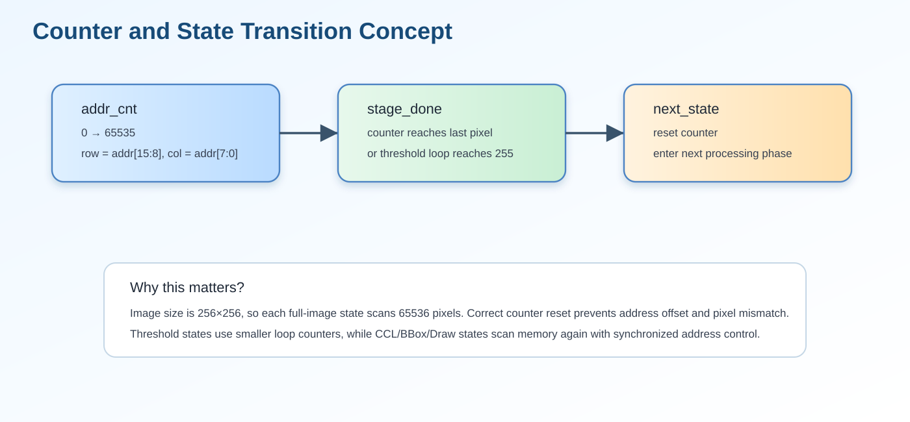

10. 十、Controller FSM
一、題目說明
本題要求畫出 controller 的 state diagram，並解釋每一個 state 的功能。Lab7 的 drawBbox 並不是單一運算電路，
而是一個需要控制 ImgROM、UrSRAM、AnsSRAM 與多個影像處理階段的完整硬體系統。因此 controller FSM 是整個設計的核心。
FSM 的主要任務是依序啟動「讀圖、灰階、Gaussian、Otsu、Mask、CCL、BBox、Overlay、寫入」等階段，同時管理 address counter、 memory enable、write enable、threshold counter、label counter 與 done signal。若 FSM 狀態切換或 counter reset 出錯，最終輸出會出現 pixel shift、mask mismatch、bounding box off-by-one 或 timeout。

二、FSM 與影像處理資料流的關係
FSM 狀態並非只是一串流程名稱，而是對應到實際硬體 datapath。從 ImgROM 讀入 RGB 資料後， 依序進入 Gray、Gaussian、Otsu、Mask、CCL、BBox 與 Draw 階段。每個階段使用不同 counter 與 memory control signal。

三、State 說明表
| State | 分類 | 主要功能 | 轉移條件 / 下一步 |
|---|---|---|---|
S_IDLE | Control | 等待 enable。reset 後保持輸出不動，done=0，所有 memory control signal 回到安全狀態。 | 當 enable=1 時進入 S_LOAD。 |
S_LOAD | Memory Read | 由 ImgROM 讀取 256×256 原始 RGB 影像，控制 Img_CEN 與 Img_A，並將 Img_Q 暫存到內部 RGB memory。 | 當 address counter 掃完整張圖後進入 S_GRAY。 |
S_GRAY | Pre-processing | 逐 pixel 將 RGB 轉成灰階，概念為 Gray ≈ 0.299R + 0.587G + 0.114B。 | 灰階 memory 寫完後進入 S_HIST_CLEAR。 |
S_HIST_CLEAR | Init | 清除 0~255 histogram bins，避免上一張圖或 reset 前資料污染 Otsu 計算。 | histogram 清零完成後進入 S_GAUSS_HIST。 |
S_GAUSS_HIST | Filter + Histogram | 執行 3×3 Gaussian filter，同時建立 Gaussian 後灰階影像的 histogram。 | 65536 pixels 處理完後進入 S_OTSU_INIT。 |
S_OTSU_INIT | Threshold Init | 初始化 Otsu 累加器，例如 total sum、background weight、foreground weight、最大類間變異數等。 | 完成初始化後進入 S_OTSU_SCAN。 |
S_OTSU_SCAN | Threshold Scan | 掃描 threshold 0~255，計算 between-class variance，找出最佳 threshold。 | threshold loop 完成後進入 S_COUNT_HI。 |
S_COUNT_HI | Mask Statistics | 統計大於 threshold 的 pixel 數量，供 auto-polarity 判斷使用。 | 統計完成後進入 S_POLARITY。 |
S_POLARITY | Mask Decision | 判斷 foreground/background 是否需要反轉，避免把背景當成物件。 | 設定 invert flag 後進入 S_MASK_WRITE。 |
S_MASK_WRITE | Mask Write | 根據 threshold 與 polarity 產生 binary mask，並寫入 working memory / mask memory。 | mask 寫完後進入 S_PARENT_INIT。 |
S_PARENT_INIT | CCL Init | 初始化 union-find parent table、label counter 與 bounding box tracking 暫存器。 | 初始化完成後進入 S_CCL_SCAN。 |
S_CCL_SCAN | 8-connected CCL | 掃描 mask，檢查 NW、N、NE、W 四個鄰居，建立 label 與 equivalence relation。 | 整張 mask 掃描完成後進入 S_BBOX_INIT。 |
S_BBOX_INIT | BBox Init | 初始化每個 label 的 xmin/xmax/ymin/ymax，並準備掃描 label map。 | 完成初始化後進入 S_BBOX_SCAN。 |
S_BBOX_SCAN | BBox Update | 逐 pixel 掃描 label map，根據 label 更新該物件的最小與最大座標。 | bbox 統計完成後進入 S_BOXMAP_CLEAR。 |
S_BOXMAP_CLEAR | Draw Init | 清除 box_map，確保只畫本次有效 bounding box。 | 清除完成後進入 S_BOXMAP_GEN。 |
S_BOXMAP_GEN | Boundary Map | 根據每個有效 bbox 的四條邊產生 box_map，標出需要畫綠框的位置。 | 所有 bbox 產生完成後進入 S_DRAW_WRITE。 |
S_DRAW_WRITE | Output Write | 逐 pixel 寫入 AnsSRAM；若 box_map=1 則寫入綠色，否則寫入原始 RGB pixel。 | 65536 pixels 寫入完成後進入 S_DONE。 |
S_DONE | Finish | 拉高 done 通知 testbench 結束，AnsSRAM 內已為最終輸出影像。 | 等待下一次 reset 或模擬結束。 |
四、Counter 與 State Transition 控制邏輯
Lab7 輸入影像大小為 256×256，因此完整掃描一張圖需要 65536 個 pixel。多數 state 會使用同一類型的 address counter 由 0 掃描至 65535，並依據目前 state 決定該 address 對應的是 RGB memory、gray memory、gauss memory、mask memory、 label memory 或 AnsSRAM。

| 控制項 | 作用 | 錯誤時可能造成的問題 |
|---|---|---|
addr_cnt |
掃描 256×256 image。 | 地址少一拍或多一拍會造成整張圖偏移。 |
row / col |
由 address 推出座標，用於 Gaussian、CCL、BBox。 | row/col 對應錯誤會造成 bbox 座標錯誤。 |
threshold counter |
Otsu 掃描 0~255 gray level。 | threshold 可能偏差，導致 mask 錯誤。 |
label counter |
CCL 分配新 label。 | label 重複或溢位會使 connected component 合併錯誤。 |
stage_done |
判斷目前階段是否完成。 | 太早切 state 會資料未完成；太晚切 state 可能 timeout。 |
五、FSM 重要設計細節
Reset 狀態要完整
在 S_IDLE 或 reset 中，所有 counter、done、CEN/WEN 與暫存器需初始化，避免上一階段資料影響下一次模擬。
Memory control 要同步
Img_CEN、Ans_CEN、Ur_CEN 為 active low；write 時 WEN=0，read 時 WEN=1。FSM 需明確控制每個 state 的讀寫方向。
Otsu 與 mask 分開
先完成 histogram 與 threshold 計算，再產生 mask，可避免 threshold 尚未穩定時就開始二值化。
CCL 後才算 bbox
若 label equivalence 尚未 resolve 就開始算 bbox，可能會讓同一物件被分成多個 box。
六、FSM Debug 方法
當最終 BMP 錯誤時，不應只看輸出圖，而要依照 FSM 階段逐步觀察 waveform。
例如輸出整體偏移，優先檢查 S_LOAD 與 S_DRAW_WRITE 的 address timing；
若物件區域整片錯誤，檢查 S_OTSU_SCAN、S_POLARITY 與 S_MASK_WRITE；
若框線位置不對，則檢查 S_BBOX_SCAN 與 S_BOXMAP_GEN。

七、可觀察的 Waveform Signals
| Signal | 觀察目的 |
|---|---|
state / next_state | 確認 FSM 是否依序轉移且沒有卡住。 |
addr_cnt / Img_A / Ans_A | 確認 image address 是否由 0 到 65535 正確掃描。 |
Img_CEN / Ans_CEN / Ans_WEN | 確認 memory read/write 時序。 |
threshold | 確認 Otsu threshold 是否在 S_OTSU_SCAN 後穩定。 |
mask / polarity | 確認 binary mask 與 auto-polarity 是否正確。 |
label / parent | 確認 CCL label 與 union-find equivalence 是否正確。 |
bbox_xmin/xmax/ymin/ymax | 確認 bounding box 座標是否符合物件邊界。 |
done | 確認最後是否正常完成並通知 testbench。 |
八、設計優點
- 降低 critical path：每個 state 僅處理單一主要功能，避免 Gray、Gaussian、Otsu、CCL 在同一 cycle 串接。
- 提升可讀性：FSM 流程與影像 pipeline 對應清楚，報告與 demo 時容易說明。
- 方便 debug：若出現 mismatch，可依 state 對應檢查中間資料。
- 利於 synthesis：分階段控制可降低 combinational delay，較容易滿足 10 ns clock constraint。
- 支援完整驗證：從
S_LOAD到S_DONE覆蓋 P1~P4 所需完整影像流程。
九、報告可直接貼上的正式答案
本設計之 controller 採用 FSM 架構控制完整影像處理流程。系統在 S_IDLE 等待 enable 訊號，
啟動後進入 S_LOAD 從 ImgROM 讀入 256×256 RGB 影像。接著 S_GRAY 將 RGB pixel 轉換為灰階，
S_HIST_CLEAR 清除 histogram，S_GAUSS_HIST 執行 3×3 Gaussian filter 並建立灰階分佈。
完成前處理後，FSM 進入 S_OTSU_INIT 與 S_OTSU_SCAN 計算最佳 Otsu threshold，
並透過 S_COUNT_HI 與 S_POLARITY 判斷 foreground/background 是否需要反轉。
完成 threshold 與 polarity 判斷後，S_MASK_WRITE 產生 binary mask。
接著 S_PARENT_INIT 初始化 union-find 與 label 相關資料，S_CCL_SCAN 執行 8-connected connected component labeling。
之後，S_BBOX_INIT 與 S_BBOX_SCAN 掃描 label map 並計算每個物件之 Xmin、Xmax、Ymin、Ymax。
最後，S_BOXMAP_CLEAR 與 S_BOXMAP_GEN 產生需要畫綠色邊界的位置，
S_DRAW_WRITE 將原始 RGB 或綠色 bounding box pixel 寫入 AnsSRAM，所有 pixel 完成後進入 S_DONE 並拉高 done。
此 FSM 設計將複雜影像演算法拆成多個可控制階段，使記憶體讀寫、門檻計算、CCL 標記與最終繪圖皆能獨立驗證。 因此本設計具有清楚的資料流、較短的 critical path 與良好的除錯能力。